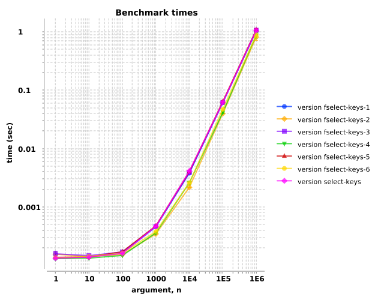
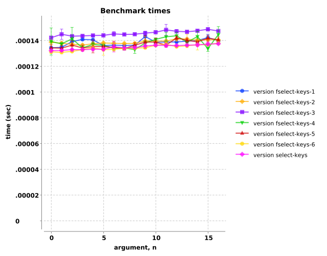
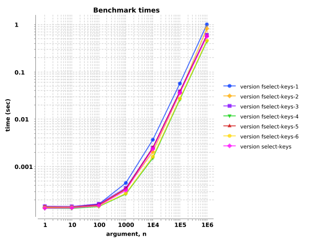
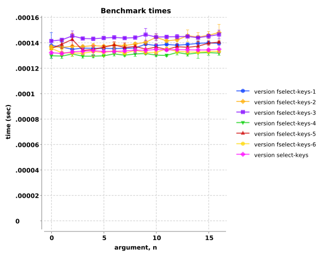
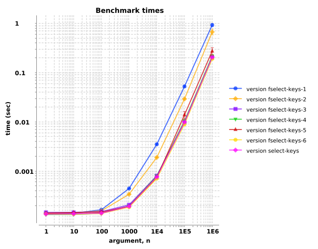
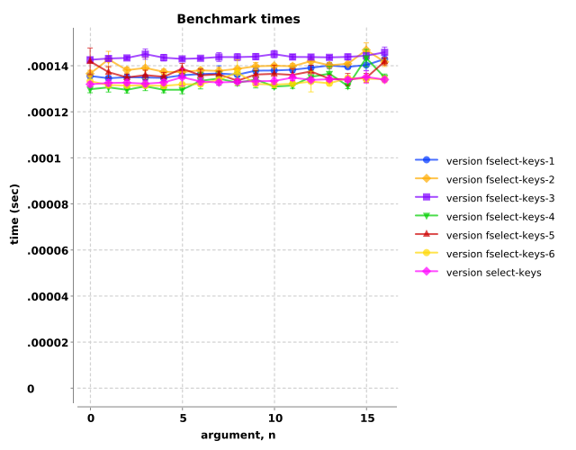

select-keys performance compare to alternatives?
Observation: A straightforward, idiomatic implementation with reduce, conj!, and transients offers performance
improvements across a wide range of conditions.
Clojure's select-keys is implemented
with recursive loop pattern. Let's write six
variants that mix-and-match components and compare their performance.
| name | machine | |
|---|---|---|
select-keys
|
loop & recur
|
|
fselect-keys-1
|
reduce & assoc
|
|
fselect-keys-2
|
reduce & assoc!
|
transients |
fselect-keys-3
|
reduce & conj a MapEntry
|
|
fselect-keys-4
|
reduce & conj!
|
transients |
fselect-keys-5
|
reduce & conj a MapEntry
|
|
fselect-keys-6
|
reduce & conj! a MapEntry
|
transients |
We'll use the Criterium benchmarking facility to objectively measure the evaluation times of a range of conditions. We'll explore two regimes of hashmap sizes: zero to sixteen key/values pairs stepping by ones, and one to one-million key/value pairs stepping by decades. Further, we'll investigate the effects of the different flavors of key sequences (labeled all keys, half keys, and no keys, explained later).
Overall, three variants demonstrated improved performance over Clojure's select-keys. Variant six, labeled as fselect-keys-6,
displayed 5–20% improved performance over a wide range of hashmap sizes and fractions of key sequence matches. This implementation is straightforward
and maintains idiomatic style. It is provided by see-sharp's core
namespace, named fselect-keys.
Let's consider selecting keys from hashmaps where the elements of the key sequence are all present in the hashmap. For example, this hashmap…
{:a 11 :b 22 :c 33 :d 44 :e 55 :f 66}…fully contains the elements of this key sequence.
[:a :b :c :d :e :f]If we stack them, we can see the matches.
{:a 11 :b 22 :c 33 :d 44 :e 55 :f 66} ;; hashmap[:a :b :c :d :e :f] ;; key sequence
The hashmap contains every keyword contained in the key sequence, :a through :f. The output hashmap would be identical to
the input hashmap. Though we are using keywords as keys for this illustration, during benchmarking, the keys are integers.
We'll test hashmaps in two size regimes. The first regime is 'large': hashmaps containing one, ten, one-hundred, …up to one-million key-value pairs.
The second regime is 'small': hashmaps containing one to sixteen key/value pairs. We will compare the Clojure's select-keys (magenta
diamonds) to six alternative implementations.
The upper chart shows that variants 2 (orange diamonds), 4 (green squares), and 6 (gold circles) demonstrate 20-25% speedups across a wide range of hashmap sizes. The lower chart shows that most of the variants perform similarly, with 2, 4, and 6 again performing among the speediest by a small margin.

| arg, n | |||||||
|---|---|---|---|---|---|---|---|
| version | 1 | 10 | 100 | 1000 | 10000 | 100000 | 1000000 |
| fselect-keys-1 | 1.3e-04±9.4e-07 | 1.4e-04±1.4e-06 | 1.6e-04±2.3e-06 | 4.5e-04±5.7e-06 | 3.8e-03±5.3e-05 | 6.0e-02±2.4e-03 | 1.0e+00±4.9e-02 |
| fselect-keys-2 | 1.5e-04±1.6e-05 | 1.4e-04±2.1e-06 | 1.5e-04±1.1e-06 | 3.4e-04±1.4e-06 | 2.1e-03±5.2e-06 | 3.9e-02±4.2e-04 | 8.1e-01±1.0e-01 |
| fselect-keys-3 | 1.6e-04±1.8e-05 | 1.4e-04±9.6e-07 | 1.7e-04±1.1e-06 | 4.6e-04±1.4e-05 | 3.8e-03±7.5e-05 | 6.1e-02±2.0e-03 | 1.1e+00±5.0e-02 |
| fselect-keys-4 | 1.3e-04±7.7e-07 | 1.3e-04±9.4e-07 | 1.5e-04±1.5e-06 | 3.6e-04±1.3e-06 | 2.6e-03±1.8e-04 | 4.1e-02±1.5e-03 | 8.7e-01±9.4e-02 |
| fselect-keys-5 | 1.4e-04±1.6e-06 | 1.4e-04±4.6e-06 | 1.7e-04±1.6e-06 | 4.7e-04±5.2e-06 | 4.0e-03±1.2e-04 | 6.4e-02±2.8e-03 | 1.1e+00±5.0e-02 |
| fselect-keys-6 | 1.3e-04±3.2e-06 | 1.4e-04±1.8e-06 | 1.6e-04±4.3e-06 | 3.7e-04±6.0e-06 | 2.6e-03±7.6e-05 | 4.7e-02±1.6e-03 | 8.8e-01±9.5e-02 |
| select-keys | 1.3e-04±6.4e-07 | 1.4e-04±1.3e-06 | 1.6e-04±1.3e-06 | 4.6e-04±2.5e-06 | 4.1e-03±3.3e-05 | 6.1e-02±1.5e-03 | 1.1e+00±4.0e-02 |

The next two charts involve scenarios where the hashmap contains half of the elements of the key sequence. For example, the following hashmap contains only half the keys of the key sequence.
{:a 11 :b 22 :c 33 :d 44 :e 55 :f 66} ;; hashmap[:a :c :e :g :h :i] ;; key sequence
The hashmap contains keywords :a, :c, and :e, but not :b, :d, nor :f.
Furthermore, the key sequence contains three keywords that are not in the hashmap. The output hashmap would be half the size of the input hashmap.
Variants 4 (green triangles) and 6 (gold circles) show 15-20% speedups for both large hashmaps (first chart below) and small hashmaps (second chart below).

| arg, n | |||||||
|---|---|---|---|---|---|---|---|
| version | 1 | 10 | 100 | 1000 | 10000 | 100000 | 1000000 |
| fselect-keys-1 | 1.4e-04±1.0e-05 | 1.4e-04±4.3e-07 | 1.6e-04±1.1e-06 | 4.5e-04±3.2e-06 | 3.7e-03±3.5e-05 | 5.6e-02±1.7e-03 | 9.9e-01±7.3e-02 |
| fselect-keys-2 | 1.4e-04±8.5e-07 | 1.4e-04±1.7e-06 | 1.5e-04±1.5e-06 | 3.4e-04±1.5e-06 | 2.0e-03±1.0e-05 | 3.6e-02±1.3e-03 | 8.1e-01±1.2e-01 |
| fselect-keys-3 | 1.4e-04±9.9e-07 | 1.4e-04±1.2e-06 | 1.6e-04±8.3e-07 | 3.5e-04±1.1e-05 | 2.5e-03±2.6e-05 | 3.8e-02±1.9e-03 | 6.0e-01±3.5e-02 |
| fselect-keys-4 | 1.3e-04±2.1e-06 | 1.3e-04±1.2e-06 | 1.4e-04±2.0e-06 | 2.6e-04±4.4e-06 | 1.5e-03±1.1e-05 | 2.6e-02±8.7e-04 | 4.4e-01±1.5e-02 |
| fselect-keys-5 | 1.4e-04±1.1e-05 | 1.4e-04±1.4e-06 | 1.5e-04±4.0e-06 | 3.3e-04±7.4e-06 | 2.5e-03±1.8e-04 | 3.8e-02±1.6e-03 | 5.7e-01±2.4e-02 |
| fselect-keys-6 | 1.4e-04±2.7e-06 | 1.4e-04±2.6e-06 | 1.5e-04±1.2e-06 | 2.7e-04±8.7e-06 | 1.6e-03±8.3e-05 | 2.7e-02±1.3e-03 | 4.5e-01±1.7e-02 |
| select-keys | 1.3e-04±8.0e-07 | 1.3e-04±8.4e-07 | 1.5e-04±8.4e-07 | 3.1e-04±5.8e-06 | 2.3e-03±4.4e-05 | 3.5e-02±9.6e-04 | 5.6e-01±2.7e-02 |

These final two charts show scenarios when none of elements of the key sequence are keys of the hashmap. For example, the following hashmap and key sequence contain zero keys in common.
{:a 11 :b 22 :c 33 :d 44 :e 55 :f 66} ;; hashmap[ :g :h :i :j :k :l] ;; key sequence
The hashmap contains keys :a through :f, while the key sequence contains keys :g through :l. In
this case, though the select-keys variants must handle all the elements of the key sequence, the output hashmap would be empty.
Variant 6 (gold circles) shows about a 5% speedup over Clojure's built-in select-keys (magenta diamonds) for large hashmaps (first
chart) and pretty much matches it performance for small hashmaps (second chart).

| arg, n | |||||||
|---|---|---|---|---|---|---|---|
| version | 1 | 10 | 100 | 1000 | 10000 | 100000 | 1000000 |
| fselect-keys-1 | 1.4e-04±1.8e-06 | 1.4e-04±8.6e-07 | 1.6e-04±4.6e-06 | 4.4e-04±2.9e-06 | 3.5e-03±1.0e-04 | 5.2e-02±1.6e-03 | 9.2e-01±5.8e-02 |
| fselect-keys-2 | 1.4e-04±1.7e-06 | 1.4e-04±1.2e-06 | 1.5e-04±8.2e-07 | 3.3e-04±6.9e-06 | 1.9e-03±1.7e-05 | 2.9e-02±8.0e-04 | 6.7e-01±8.8e-02 |
| fselect-keys-3 | 1.4e-04±9.8e-07 | 1.4e-04±9.6e-07 | 1.5e-04±8.3e-07 | 2.0e-04±5.6e-07 | 8.0e-04±4.6e-06 | 9.6e-03±3.6e-04 | 2.0e-01±4.5e-03 |
| fselect-keys-4 | 1.3e-04±2.0e-06 | 1.3e-04±1.5e-06 | 1.4e-04±3.7e-06 | 1.9e-04±2.7e-06 | 7.8e-04±4.7e-06 | 1.0e-02±6.3e-04 | 2.1e-01±1.9e-02 |
| fselect-keys-5 | 1.4e-04±8.8e-07 | 1.4e-04±1.1e-06 | 1.5e-04±3.4e-06 | 1.9e-04±3.0e-06 | 7.3e-04±1.6e-05 | 1.4e-02±2.4e-03 | 2.7e-01±4.7e-02 |
| fselect-keys-6 | 1.3e-04±7.8e-07 | 1.3e-04±8.7e-07 | 1.4e-04±1.1e-06 | 1.8e-04±4.4e-07 | 7.0e-04±3.1e-06 | 8.9e-03±5.7e-04 | 1.9e-01±7.2e-03 |
| select-keys | 1.3e-04±8.8e-07 | 1.3e-04±2.4e-06 | 1.4e-04±1.2e-06 | 1.9e-04±1.7e-06 | 7.5e-04±3.9e-06 | 9.8e-03±2.1e-04 | 2.0e-01±6.6e-03 |
